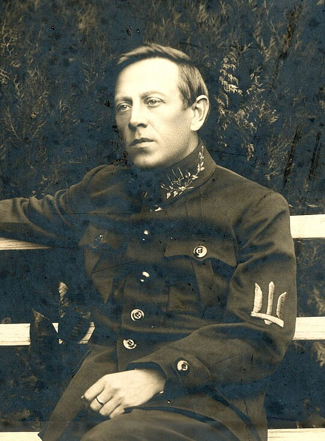
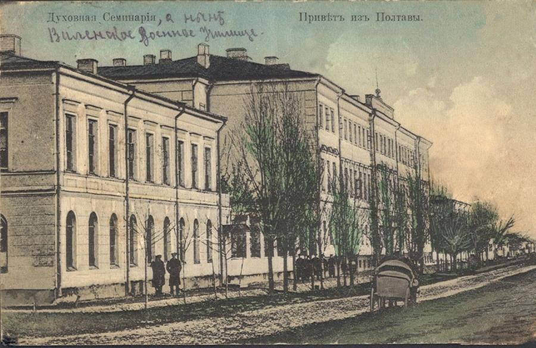
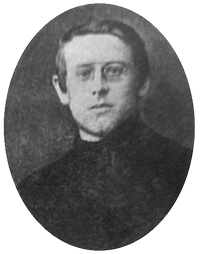

Життєпис
Семен Петлюра народився в передмісті Полтави, нині Україна (тоді Російська імперія). Був третім сином у родині, мав трьох братів і п'ятьох сестер[3], ще троє померли в дитинстві[4]. Батько — Василь Павлович Петлюра (? — 1909), міщанин; маючи три екіпажі та двох найманих робітників, орудував візницькою справою[4][5]. Мати — Ольга Олексіївна (? — 19.01.1919), з давнього полтавського роду Марченків[6], мешкали поблизу полтавського Хрестовоздвиженського монастиря[4]. Її батько, овдовівши, постригся в ченці, взявши ім'я Аркадій. Він став одним із співзасновників Київського Іонівського скиту, помер у сані ієромонаха. Родина Петлюр мешкала в старому трикімнатному будинку № 20 по Завгородній вулиці (тепер — вулиця Капітана Володимира Кісельова). Усі діти в сім'ї отримували виховання в українській релігійній духовно-побутовій атмосфері[4].
Навчання
У віці 13-ти років розпочав навчання — спочатку в церковно-парафіяльній школі, згодом у Полтавській духовній семінарії (1895—1901). У 1900 році під враженням виступу Миколи Міхновського на організованому Петлюрою в Полтаві відзначенні річниці Шевченка вступив до лав Революційної української партії (РУП). У 1901 році брав участь у Всеукраїнському студентському з'їзді, представляючи громаду духовної семінарії, хоча на той час за свою політичну діяльність вже був виключений з навчального закладу. Навесні 1902 року став одним із організаторів виступу семінаристів, які вимагали скасувати систему шпигунства, звільнити наглядачів, увести до програми українознавчі предмети. Їх домагання були сформульовані в спеціальній петиції, під котрою було зібрано близько 200 підписів. За цей протест із закладу спершу було звільнено головних призвідців, а коли вся семінарія збунтувалася проти такого вчинку влади й учні почали чинну обструкцію викладів, то додатково ще близько півсотні семінаристів були також виключені та закрито середні класи[7]. Незабаром ці ж активісти взяли участь у селянських виступах у 1902 році. Петлюра на чолі групи семінаристів, виключених із семінарії за заворушення, 17 квітня 1902 року прибув до Решетилівки Полтавського повіту, де влаштував мітинг. Після придушення руху жандармерія порушила кримінальну справу проти «підмовників». Рятуючись від неминучого арешту, Петлюра разом із приятелем та ідейним однодумцем Прокопом Понятенком восени 1902 року виїхав на Кубань.
На Кубані
На новому місці взяв участь в організації в Катеринодарі осередку РУП — «Чорноморської вільної громади». Того ж року розпочав журналістську діяльність, дописував до періодичних видань. Перша його стаття була опублікована в 1902 році у львівському «Літературно-науковому віснику», котрий редагував Михайло Грушевський. Працював учителем у початковій школі в станиці Смоленській[ru], згодом — у Катеринодарському початковому міському училищі. У 1903 році влаштувався в археографічну експедицію член-кореспондента РАН Федора Щербини, котрий за дорученням наказного отамана Кубані Якова Малами впорядковував архіви Кубанського козацького війська[8]. Невдовзі царська охранка вийшла на слід «полтавських біженців». Симона Петлюру ув'язнили в Катеринодарській в'язниці. Друзі посприяли звільненню заарештованого під грошову заставу, котру за сина вніс батько.
Повернення в Україну
Звільнившись, Петлюра вирішив не випробовувати долю, а тікати за кордон. Восени 1904 року, змінивши ім'я та прізвище на Святослав Таґон[9], разом із Понятенком перебували в районі Крем'янця, потім були нелегально переправлені через кордон[9]. Згодом виїхав до Львова, де на той час розташовувався Закордонний комітет РУП. Із березня по жовтень 1905 року редагував партійний часопис «Селянин», співпрацював у «Літературно-науковому віснику», «Записках НТШ», «Волі». У грудні 1904 року на конференції РУП у Львові виступив проти об'єднання з Російською соціал-демократичною робітничою партією (РСДРП). Декілька місяців навчався на університетських курсах українознавства. Налагодив контакти з Іваном Франком, Володимиром Гнатюком та провідниками місцевих українських партій. Після оголошення в жовтні 1905 року політичної амністії в Російській імперії повернувся додому. Працював у «Громадській думці», після її заборони — у газеті «Рада». На II з'їзді РУП, на якому партія отримала нову назву — Українська соціал-демократична робітнича партія (УСДРП), був обраний до її Центрального комітету. Тоді ж увійшов у конфлікт з одним із лідерів партії Володимиром Винниченком, переконавши з'їзд не обирати того на посаду редактора центрального друкованого органу через «нестійкість», «богемність» і «політичні хитання». Зрештою Винниченко не був обраний делегатами[10]. Від цього моменту між ними починається тривала боротьба[11]. У січні 1906 року разом із Миколою Поршем та Прокопом Понятенком виїхав до Санкт-Петербурга редагувати центральний орган партії щомісячник «Вільна Україна». Після публікації шести випусків видання припинилося, а Симон влітку 1906 року повернувся до Києва. З липня 1906 року — секретар київського щоденника «Рада», від літа 1907 до 1908 року — співредактор легального соціал-демократичного часопису «Слово».
Російський період
У 1908—1910 роках проживав у Петербурзі. Під час життя у місті брав активну участь в українському русі, зумів домовитись про запровадження в журналі «Мир» українського відділу. Виступав під час відзначення 50-річчя роковин смерті Тараса Шевченка в залі Дворянського зібрання на Михайлівській площі[12]. Був присутній на похованні товариша, авіатора Лева Мацієвича, поклав вінок з україномовним написом на синьо-жовтій стрічці[13]. На початку 1911 року переїхав до Москви, де його чекала Ольга Більська — полтавка, студентка Московського університету. Їхнє знайомство відбулося на вечірці українського земляцтва наприкінці 1908 року й переросло у роман, який закінчився шлюбом (цивільним із 1910 і зареєстрованим 1915 року). 1911 року в подружжя народилась донька — Леся Петлюра (1911—1941). Петлюра влаштувався рахівником у товаристві убезпечення «Россия». Незабаром на кошти українських громад заходився видавати журнал «Украинская Жизнь» (1912—1914). Поступово з пересічного рахівника і журналіста перетворився на відомого громадського діяча. Федір Корш передрікав йому світову славу:
"Українці самі не знають, кого вони мають серед себе. Вони гадають, що Петлюра — видатний редактор, патріот, громадський діяч тощо. Це все правда, але не ціла правда. Петлюра — безмірно вищий за те, що про нього думають. Він — з породи вождів, людина із того тіста, що колись, у давнину, закладали династії, а за нашого демократичного часу стають національними героями… Буде він вождем народу українського. Така його доля."
Під час Першої світової війни своє ставлення до війни виклав у статті-відозві «Війна і українці». У цій публікації доводив, що українці лояльно виконують свій обов'язок перед Російською державою та висловлював надію, що в майбутньому ставлення влади до українського питання зміниться. На початку 1916 року добровільно вступив на службу до Всеросійського Союзу Земств, перебував на посаді Уповноваженого Головного Всеросійського Земського З'їзду, Голови Контрольної Колегії Земського Союзу на Західному фронті. Того ж року з сім'єю поселився в Мінську, де перебував штаб Західного фронту. Після повалення самодержавства Петлюра виступив ініціатором та організатором проведення в Мінську українського з'їзду фронту (квітень 1917 року), на якому він був обраний головою української фронтової ради, а та, у свою чергу, делегувала його на I Всеукраїнський військовий з'їзд (5–8 травня 1917 року) в Києві.